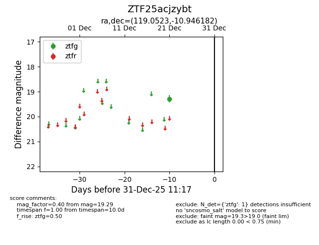
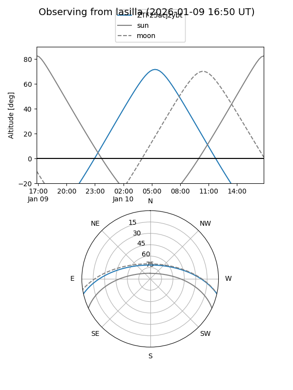
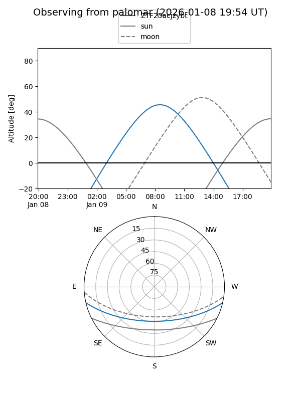

ZTF25acjzybt
Target ZTF25acjzybt at 2026-01-09 12:49
Aliases and brokers:
FINK: link
Lasair: link
ALeRCE: link
alt names
ZTF25acjzybt (ztf,fink_ztf)
Coordinates:
equatorial (ra, dec) = 119.0523,-10.94618
equatorial (HMS+DMS) = 07:56:12.56,-10:56:46.26
galactic (l, b) = (230.2417,+9.03810)
Flags:
Photometry:
last ztfg=19.29
1 ztfg detections
Lightcurve

Visibility


Additional plots